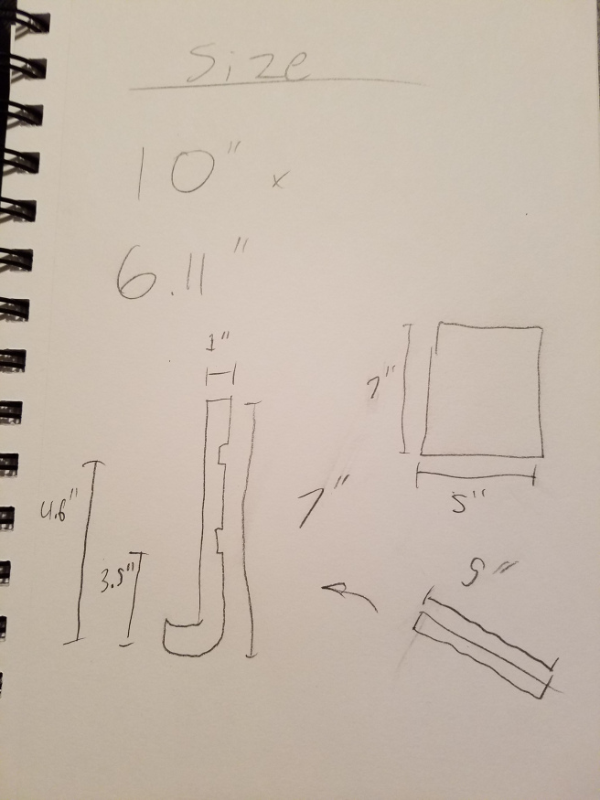

Designer, data fanatic, and storyteller.
My goal in this assignment was to create a stand for my tablet using a laser cutter. The stand should be adjustable for multiple uses.
These were my first quick sketches. The idea was to have a stand with 2 modes, one better for reading or watching something, the other better for writing, drawing, or playing a game.
Here’s the first design I came up with. You have a piece of wood with places in it to place another piece. The second piece holds it up, and changes the angle based on where it is placed. Initially I made the bottom square shaped, but thought that may cause balance issues. I figured a round bottom was better.
I made the stand 3 pieces from the laser cutter, 2 to place the tablet on, and the other for support. I gave a place to set the tablet into to make sure it stays steady.

Here I show the actual dimensions. The tablet is 10×6 inches, so it needs to work for that. I placed one notch 2/3 of the way up the stand, the other at half. I wanted the 2 settings to be as different as possible, but if I placed one too low it would not balance. The notches needed to fit the exact width of the wood being cut, which is 1/8 of an inch. The support piece would be 5×7 inches and sit on the long side so there is more support.
This video shows a glimpse of the finished product, and how it can be utilized. The upright view is great for watching videos, while the flatter view is better for actually using the device. I did feel like there wasn’t as big of a difference in angle as I would have liked, though. So if I were to re-do this prototype I would have put the notches farther apart. Also, the size of the notches is probably half a millimeter or so off from the actual thickness of the wood, which causes it to be looser than it should have. This is probably from variations in the exact width of the wood.